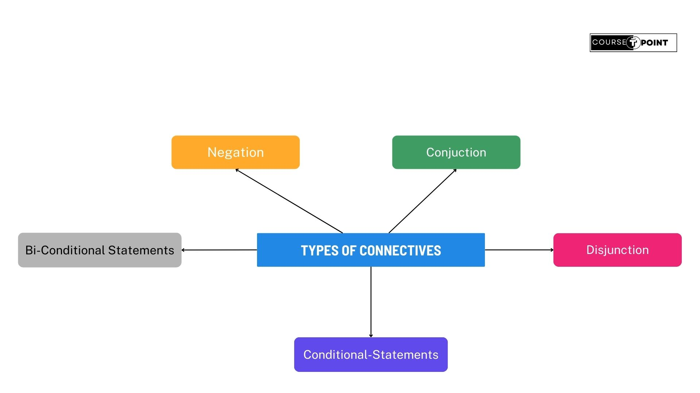

Mathematical Logic
| Table Of Content | |
|---|---|
Proposition (Statement):
A Proposition or statement is a declarative sentence that is either true or false, but not both. For example,"Three plus three equals six" and "Three plus three equals seven" are both statements the first because it is true and the second because it is false. Similarly "x+y>1" is not a statement because for some values for x and y the sentence is true, whereas for others it is false. For instance, if x=1 and y=2, the sentence is true, if x=-3 and y=1, this is false. The truth or falsity of a statement is called its truth value.
For example,
1.) The sun rises in the west.
2.) 2+2 = 4.
3.) Do you speak Hindi?
The sentence 1, 2 & 3 are statements, the first is false and second
and third is true.
Truth Tables:
A truth table is a table that shows the truth value of
a compound proposition for all positions. For example, consider the
conjuction of any two propositions p and q. The compound statement p ^ q
is true when both p and q are true, otherwise it is false. These are possible
cases.
a.) p is true and q is true.
b.) p is true and q is false.
c.) p is false and q is true.
d.) p is false and q is false.
Example-
| p | q | p ^ q |
|---|---|---|
| T | T | T |
| T | F | F |
| F | T | F |
| F | F | F |
Compund Statements:
A proposition consisting of only a single propositional variable or a single propositional constant is called an atomic (primary, primitive) proposition; that is they can not be further subdivided. A proposition obtained from the combinations of two or more propositions by means of logical operators or connectives of two or more propositions or by negating a single proposition is referred to molecular or composite or compund proposition (statement).
Connectives:
The words and phrases (or symbols) used to form compound statements are called connectives. These are five basic connectives called Negation, Conjuction, Disjunction, Conditional & Bi-Conditional. The following symbols are used to represent connectives.
| Symbol used | Connective word | Nature of the compound statement formed by the connective. | Symbolic from | Negation |
|---|---|---|---|---|
| ~,¬,N | not | Negation | ~p | ~(~p)=p |
| ^ | and | Conjuction | p^q | (~p)∨(~q) |
| ∨ | or | Disjunction | p∨q | (~p)^(~q) |
| -> | if....then | Conditional | p->q | p^(~q) |
| <-> | if and only if | Bi-conditional | p<->q | [p^(~q)]∨[q^(~p)] |
Types of Connectives:
Negation:
If p is any proposition, the negation of p, denoted by
~p and read as not p, is a statement which is false when p is true and
true when p is false. Consider the statement-
p: Paris is in France.
Then the negation of p is the statement
~p: Paris is not in France.
Strictly speaking, not is not a connective, since it does not join
two statements and ~p is not really a compound statement. However, not is a
unary operation for the collection of statements, and ~p is a statement if p is
considered a statement.
Conjuction:
If p and q are two statements, then conjuction of p and q
is the compound statement denoted by p^p and reads as "p and q". The compound
statement p^q is true when both p and q are true, otherwise it is false.
Example-
p: Ram is healthy
q: He has blue eyes
p^q: Ram is healthy and he has blue eyes.
Disjunction:
If p and q are two statements, the disjunction of p and q is the compound statement denoted by p∨q and reads as "p or q". The statement p∨q is true if at least one of p or q is true. It is false when both p and q are false.
Example:
a.) 5 < 5 ∨ 5 < 6
b.) 5 * 4 = 21 ∨ 9 + 7 = 17
Solution:
a.) True, since one of its components viz. 5 < 6 is true.
b.) False, since both of its components are false.
Conditional Statements:
A conditional statements is typically expressed in the form "if p, then q", where p represents the hypothesis (or antecedent) and q represents the conclusion (or consequent). It's often denoted as p->q. The statement p->q means that if the hypothesis p is true, then the conclusion q must also be true. However, if p is false, then the truth value of q doesn't matter; the statement is still considered true.
Example-
a.) If tomorrow is Sunday then today is Saturday.
b.) If it rains then I will carry an umbrella.
Here,
p: Tomorrow is Sunday
q: Today is Saturday
The truth table of p->q is given below.
| p | q | p->q |
|---|---|---|
| T | T | T |
| T | F | F |
| F | T | T |
| F | F | T |
Bi-conditional Statements:
A Bi-conditional Statement is a logical statement that asserts a relationship between two propositions, stating that they are true or false simultaneously. It's often expressed as "If and only if" and denoted by the symbol <->.
For example, let's say p represents the statement "It is raining," and q reresents the statement "The ground is wet." Then, the bi-conditional statements p<->q would mean "It is raining if and only if the ground is wet."
The truth table for Bi-conditional Statement is-
| p | q | p<->q |
|---|---|---|
| T | T | T |
| T | F | F |
| F | T | F |
| F | F | T |
Duality:
Given a boolean expression, the dual is formed by replacing AND
with OR, OR with AND, 0 with 1, and 1 with 0. Variables and complements are
left interchanged. This rule for forming the dual can be summerized as follows:
[f(X1, X2,....., Xn, 0, 1, + , .)]D = f(X1, X2, ...... Xn, 1, 0, . , +)
This important property of changing operations and identity elements in
Boolean algebra is known as duality principle. This ensures that if a
theorem is proved based on the axioms of the Boolean Algebra, then a dual
theorem obtained by interchanging + with . and 0 with 1 automatically holds.
Axioms and basic theorems are divided into two parts (a) and (b), one part
may be obtained by other by using duality principle.
Normal Forms:
By comparing truth tables, one determine whether two logical expression P and Q are equivalent. But the process is very tedious when the number of variables increases. A better method is to transform the expressions P and Q to some standard forms of expressions P' and Q' such that a simple comparision of P' and Q' shows whether P=Q, The standard forms are called Normal Forms or Cononical Forms. These are two types of Normal form; Disjunctive normal form and Conjuctive normal form.
Disjunctive Normal Form:
In a logical expression, a product of the variables and their negations is called an elementary product. For example, p^~q , ~p^~q, ~p^q are some elementary products in two variables. A sum of the variables and their negations is called an elementary sum. For example, p∨q, p∨~q, ~p∨~q are elementary sums in two variables.
A logical expression is said to be in disjunctive form
if it is the sum of elementary products. For example, p∨(q^r) and p∨(~q^r)
are in disjunctive normal form, p^(q∨r) is not in disjunctive normal
form.
Example- Obtain the disjunction normal forms of the following.
a.) p^(p->q)
Solution:
a.) p^(p->q) = p^(~p∨q)
= (p^~q)∨(p^q)
Which is the required disjunctive form.
Conjuctive Normal Form:
A logical expression is said to be in conjuctive normal
form if it consists of a product of elementary sums.
Example: Obtain a conjuctive normal form of the following.
a.) p^(p->r)
Solution:
a.) p^(p->r) = p^(~p∨q)
Which is required normal form.